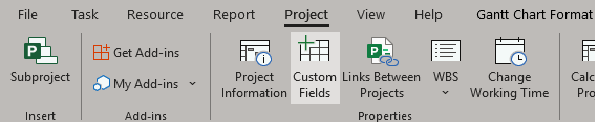
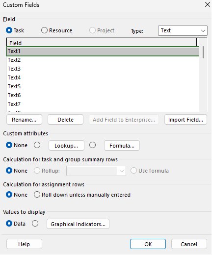
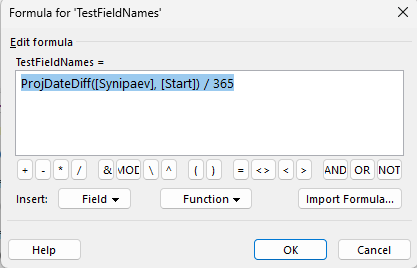

Mis on Custom Fields?
Custom Fields võimaldavad lisada oma arvutusi ja andmeid projekti.
1. Mine vahekaardile „Project“ ja seejärel vahekaardile „Custom Fields“, et avada oma väljad

2. Seejärel avaneb menüü, kus on näha kõik väljad

3. Rullmenüüst saad valida loodud välja tüübi

4. Katseks nimetame tüübi Text esimese välja ümber nimeks „TestFieldNames“

5. Edasi saame muuta oma välja atribuute, näiteks lisada arvutusvalemi või lisada väljale „LookUp“-andmed

6. Lisame kaks õpilast ja nende kirjelduse, kellega hakkame tulevikus meie projektis töötama

7. Seejärel salvestame ja sulgeme lisatud välja ning lisame oma projekti uue veeru nimega „TestFieldNames“

8. Nüüd saame sellesse veergu lisada varem sisestatud õpilaste andmed

9. Samal põhimõttel saame oma projekti lisada ka mõne arvutusvalemi. Näiteks arvutab see valem inimese vanuse aastates projekti alguskuupäeval [Start], lähtudes sünnikuupäevast [Synipaev].
